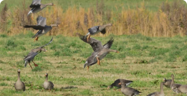
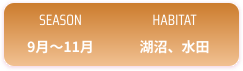
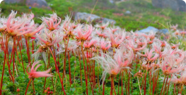
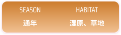
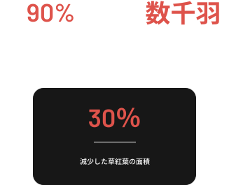

黄金の季節
秋の湿原
気温
5-15°C
涼しく爽やかな空気
ベストシーズン
9~11月
草紅葉と渡り鳥
出会える生き物
40種以上
渡り鳥の季節

秋、旅立ちと準備の季節
Autumn - Season of Migration
草紅葉が湿原を染める季節。
渡り鳥が訪れ、動植物は冬支度を進める。
秋の湿原を代表する命たち
旅立ちと冬支度、それぞれの秋。

Iris setosa
マガン
動物
秋に大陸から渡ってくる水鳥。V字編隊を組んで飛ぶ姿
は秋の風物詩。
秋の生活
V字の形で飛ぶのは、風の抵抗を減らして体力を節約する
ためである。日本に着くと家族ごとに行動し、湿地や田ん
ぼで水草や落ちた穀物を食べる。昼はえさを探し、夜は湖
などで休むという決まった生活をしている。



Anser albifrons
チングルマ
植物
秋には紅葉が美しい高山植物。草紅葉で湿原を
赤く染める。
秋の生活
秋になると葉が鮮やかな赤色に紅葉し、湿原全体を赤く
染める草紅葉の主役となる。夏に作った綿毛付きの種子
が風に乗って散布される時期。地上部は枯れていくが、
地下では根が栄養を蓄え、来年の春に備える。この美し
い紅葉は、厳しい冬を前にした最後の輝き。


秋の湿原が消えている
秋には、渡り鳥の重要な中継地であり、多くの生物が
冬に備える場所です。この大切な場所が失われつつあります。


秋の彩りを未来へ
秋の湿原が失われれば、
草紅葉の赤い絨毯も、
渡り鳥の群れも、
キツネの冬支度も、
二度と見ることができなくなります。